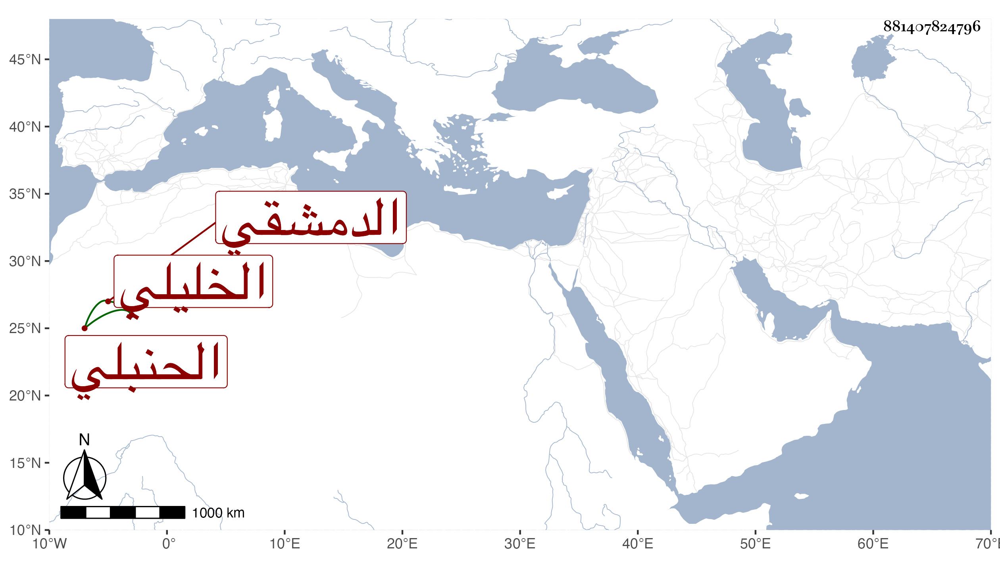

0902Sakhawi.DawLamic.ITO20230111-ara1.EIS1600.881407824796
Biography ID: 881407824796
أحمد بن أبي بكر بن يوسف بن عبد القادر بن يوسف بن خليل بن مسعود ابن سعد الله الشهاب بن العماد الخليلي ثم الدمشقي الحنبلي . ولد في سنة ست وثلاثين وسبعمائة أو التي بعدها وسمع علي أبي محمد بن القيم طرق زرغبا تزدد حبا لأبي نعيم وغير ذلك ، وكذا سمع من والده والعماد أحمد بن عبد الهادي وأبي الهول الجزري وآخرين ، وحدث سمع منه الفضلاء وممن سمع من شيوخنا الأبي ووصفه ابن موسى بالإمام العالم العدل ووصف والده بالإمام ، وأجاز لشيخنا قديما في سنة سبع وتسعين ثم لابنته رابعة في سنة أربع عشرة ، ومات في ليلة الأربعاء ثامن عشر المحرم سنة ست عشرة ورأيت من حذف خليلا من نسبه ومن جعل يوسف الثاني في نسبه ابن عبد القادر ابن محمد بن عبد الرحمن بن سعد الله ، وهو في عقود المقريزي بدون خليل في نسبه وسعد بدون إضافة ابن عبد الله وأرخه في سنة ست وعشرين والأول أتقن .
